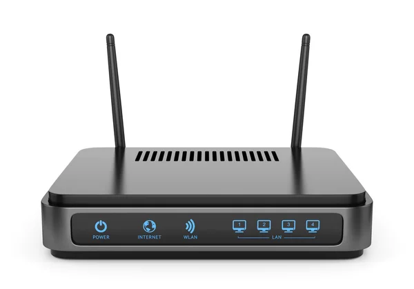

Equipamentos de Rede
Equipamentos de Rede, igualmente chamados de dispositivos de rede são todos aqueles utilizads com o propósito de facilitar e dar suporte a uma rede de computadores.
De modo que os componentes que participam de uma rede funcionem, eles precisam de dispositivos que tenham a função de intermediar ou dar auxílio a comunicação e alguns desses dispositivos são:
- Repetidor
- Bridge ou ponte
- Roteador
- Hub
- Switch
- Gateway
Desde o envio de mensagems até as atividades mais complexas como o processamento de informações em servidores na nuvem, as atividades que utilizam a web para funcionar.
Deste modo é mecessário que os gestores de T.I. da organização tenham o conhecimento de como esses dispositivos são distribuidose isso possibilita que eles tenham a capacidades de criar infras estruturas funcionais e de alta performace.
Para além do cabeamento que interliga as maquinas, precisam existir hardwares e softwares com a função de controlar a comunicação entre todas as partes que integrarem a rede.
Repetidores
Repetidores são dispositivos utilizados na conexão de dois ou mais dispositivos de uma rede local. Eles têm a função de receber e aumentar o sinal ind de um segmento de rede e repetir o mesmo sinal para outro segmento quando a distância entre elas é maior que a recomendada.
Importante: não devem ser utilizados em grade quantidade atraves dos problemas de sincronismo que causam entre as interfaces de rede.
Hubs
O termo hub é um termo genérico usado para definir qualquer tipo de dispositivo concentrador.
O hub é um dispositivo responsavel por interligar os computadores em uma rede local, de tal forma que é mais indicado para redes pequenas e domésticas.
A sua forma de trabalho é simples, ele recebe os dados vindos de uma rede e o transmite a outra maquina porque um hub não tem a capacidade de aumentar o desempenho da rede.
No momento em que o envio acontece, nenhum outro computador consegue enviar sinal. A sua liberação acontece após o sinal anterior ter sido completamente distribuido.
Roteadores
Roteadores é um dispositivo utilizado com a finalidade de permitir e gerenciar a transferência de dados entre máquinas em distintas redes, definindo o melhor caminho para que a informação chega a o seu destino.
Os roteadores são equipamentos que trabalham com um potocolo da camada de rede, cnvertendo o protocolo de uma rede para outra de protocolo de distino.
A diferença entre uma ponte e um roteador é que o endereçamento que a ponte utiliza é o da camada de enlace (MAC) das placas de rede, que é um endereçamento físico, enquanto que o roteador, por operar na camada de rede, usa o endereçamento dessa camada,que é um endereçamento lógico, no caso do TCP/IP esse endereçamentoé o endereço IP.
Roteadores (caracteristicas)
- É usado para: Conexões Internet, Conexões de LANs e Conexões de WANs.
- Podem interligar duas pu mais redes.
- Podem interligar uma rede local a internet.
- Cada uma das portas do roteador deve receber um endereço lógico.